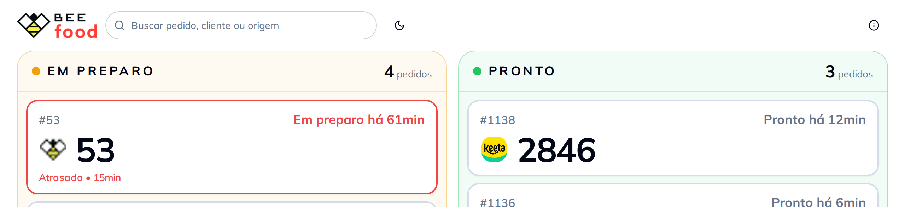
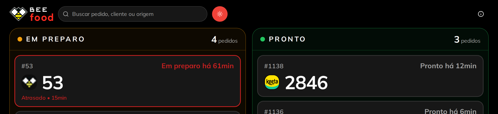

No computador ele sai em outra janela: arraste até a televisão da retirada, aperte F11 e deixe ligado. O sol e lua do cabeçalho troca o tema só do painel — claro na cozinha, escuro no corredor de serviço.
Claro

Escuro
